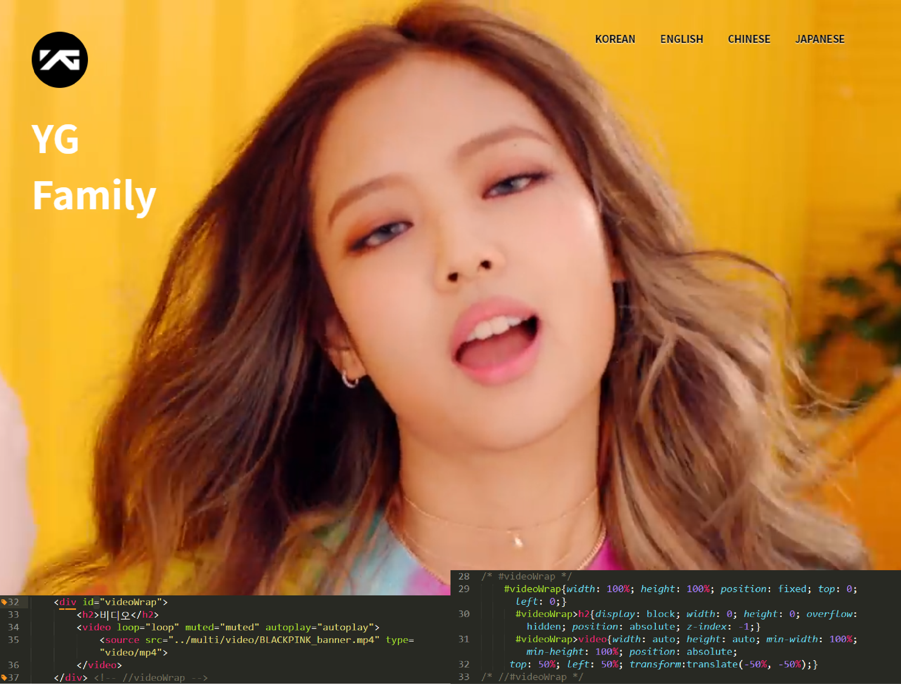
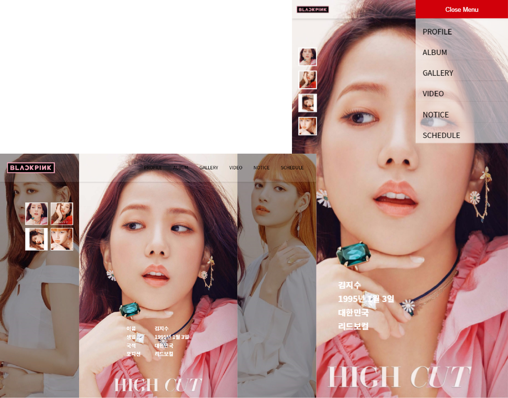
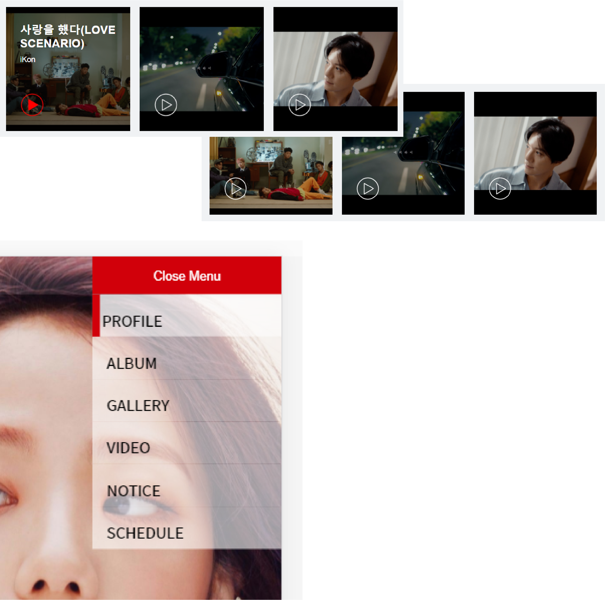
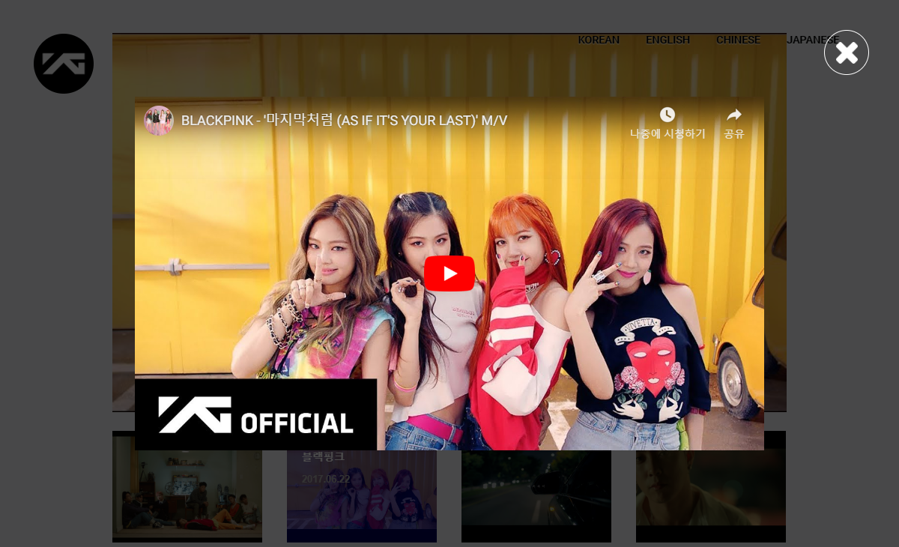

트렌드
아티스트 영상이 브라우저 꽉 차게 재생하는 화면을 디자인하여 트렌디함을 주었습니다.
모바일로 접속 시 동영상이 이미지로 대체됩니다.

편의성
디바이스에 따른 편의성을 고려하여 디자인하였습니다.

접근성
hover, focus 시 현재 선택중인 컨텐츠가 무엇인지 확인하기 쉽도록 디자인하여 접근성을 높였습니다.

주목성
뮤직비디오 클릭 시 모달 윈도우로 재생되어 주목성을 높였습니다.